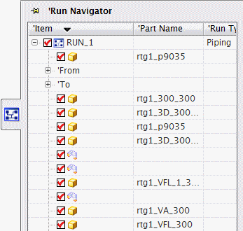
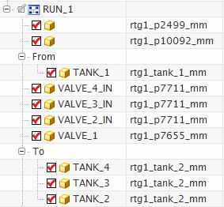
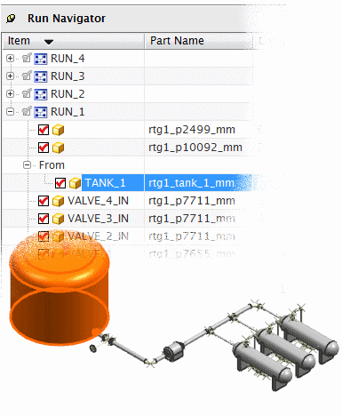

管道通路导航器 为您提供了在管线装配中创建、查看以及编辑管道通路结构的界面。

所有管道通路成员组件以及型材都将出现在管道通路节点下方。管道通路的起始项和结束项同样也被整理为管道通路节点下方的子节点。

在管道通路导航器中选择一个节点将会使装配中的对应组件在图形窗口中高亮显示。

在工具→管道通路导航器菜单下能找到的所有命令也都可以在管道通路导航器的快捷菜单中找到。因此您可以使用管道通路导航器来定义管道通路与管段。